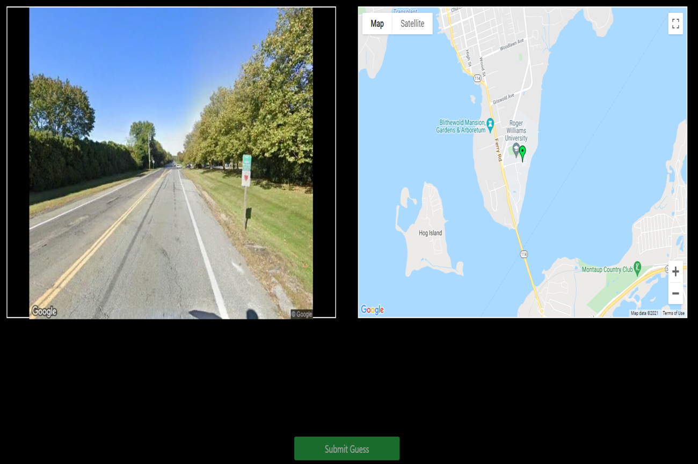
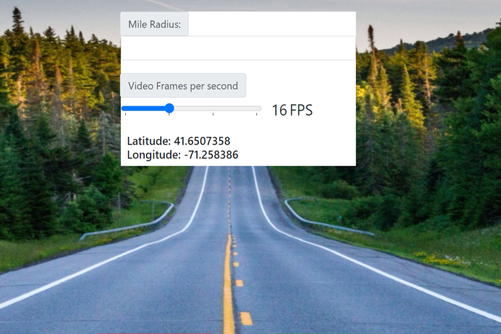
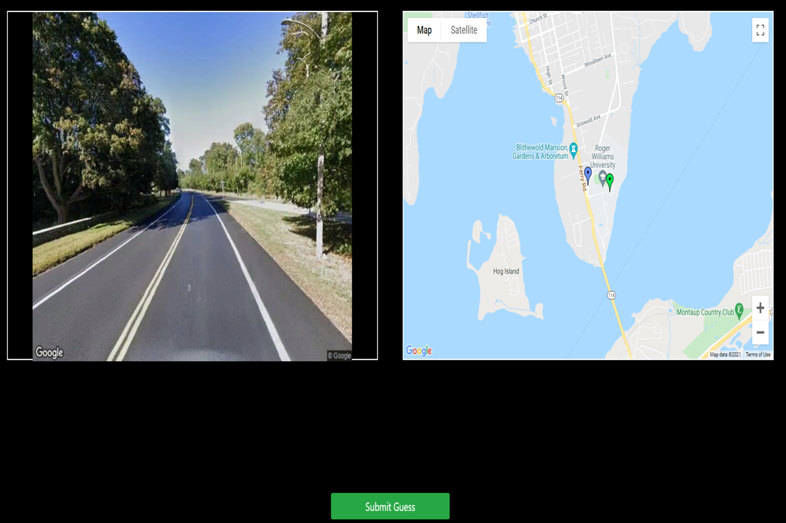
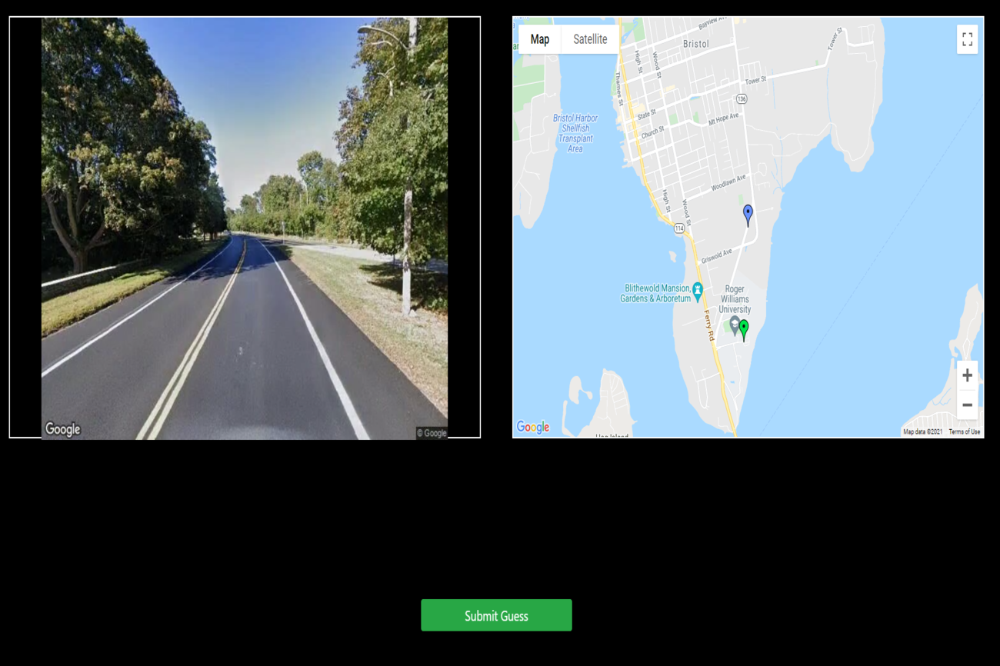
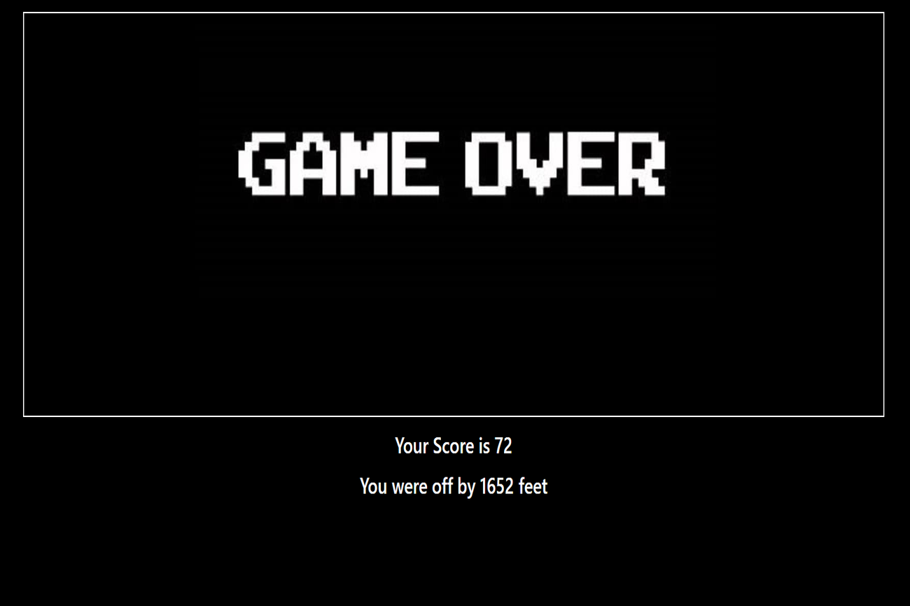

Players will start by looking at a generated route beginning at their current location.

The route's length will be approxiately the same as the mile radius inputted.
Players will take turns looking at the route and determining where the route ends.

The green icon represents the players location. The blue icon represents the players guess.

Players can make as many guesses as they want. However, the only guess accounted for is their last one.

Scoring is out of 100 points. The closer the guess is, the more points a user is granted.